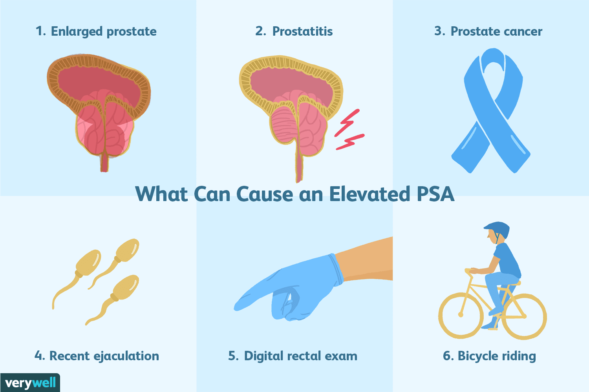

Getting lab results back can be a stressful experience, especially when it involves cancer screening. If you have recently had a routine blood draw and saw your PSA flagged as high, your mind might immediately jump to the worst-case scenario.
As a uro-oncologist, I spend a lot of time helping patients navigate these numbers. The PSA test is a phenomenal tool, but it is a starting point for an investigation, not a final diagnosis. Let us break down exactly what this test is, why the numbers fluctuate, and how modern medicine uses this data to protect your health.
What is PSA?
PSA stands for Prostate-Specific Antigen. It is a protein produced almost exclusively by the prostate gland, a small walnut-sized organ that sits just below the bladder in men.
The prostate's main job is to produce seminal fluid. Normally, most PSA stays inside the prostate, but a tiny amount naturally leaks into your bloodstream. When the prostate is irritated, enlarged, or fighting an issue, it leaks more PSA into the blood. That is exactly what the blood test measures.

What is a normal number?
Historically, doctors used a hard cutoff: anything under 4.0 ng/mL was considered normal, and anything above triggered a biopsy.
Today, we know it is not that simple. Your baseline PSA naturally increases as you age and as your prostate slowly grows. What is normal for a 75-year-old might be concerning for a 45-year-old.
Instead of looking at a single snapshot, we look at the trend. If your PSA was 1.0 last year and is 3.5 this year, that rapid jump, known as PSA velocity, is often more significant to a specialist than a number that has hovered around 4.5 for a decade.
Why is my PSA elevated? It is not always cancer
Cancer is just one of many reasons your prostate might release extra antigen. If your number is high, it could well be caused by one of these benign conditions:
- BPH (benign prostatic hyperplasia)As men age, the prostate naturally grows larger. A bigger prostate produces more PSA.
- ProstatitisInflammation or infection of the prostate gland can cause your PSA to spike dramatically, often alongside pain or urinary symptoms.
- Recent activityRiding a bicycle, a recent catheter, or recent sexual activity can temporarily raise your PSA level.
- Urinary tract infectionsA simple infection nearby can irritate the prostate.
When do we worry?
We start getting concerned when the PSA remains persistently elevated after ruling out infection, or if it is rising rapidly over a short period. We also look at the ratio of free to total PSA.
PSA travels in the blood in two ways: bound to other proteins, or floating free. If you have a high total PSA but a low percentage of free PSA, the suspicion for prostate cancer increases.
The next steps: precision and planning
If your numbers remain concerning, the days of rushing immediately into a blind biopsy are largely behind us. Modern urological oncology relies heavily on precision and advanced technology.
- Repeat the testThe very first step is often simply verifying the result a few weeks later, to be sure it was not a temporary spike.
- Advanced imaging (MRI)Before taking any tissue samples, we frequently use multi-parametric MRI. This gives a highly detailed, three-dimensional look at the prostate and shows whether there are specific suspicious lesions.
- Targeted biopsyIf the MRI shows a concerning area, we use software to fuse the MRI images with real-time ultrasound. This lets us sample the exact spot rather than sampling randomly.
- AI and predictive modellingWe increasingly use artificial neural networks and advanced algorithms alongside your lab results and imaging to predict pathological outcomes before any major surgery takes place.
The bottom line
An elevated PSA is simply a signal from your body that your prostate needs attention. It is a prompt to have a conversation with a specialist.
If we do find cancer, catching it early through these routine screenings gives us the best chance of a cure. With today's robotic-assisted surgical techniques and advanced planning, we can remove the cancer while carefully sparing the delicate nerves that control urinary and sexual function, preserving your quality of life.
Do not let the numbers panic you. Let them prompt you to take the next right step for your health.
Worried about a PSA result?
Bring the report, any previous PSA values and your MRI if you have had one. Most of the answer lies in the trend, not the single number.
Book Your Consultation